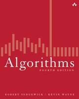
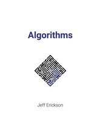
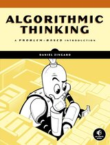

| Title | Authors | Edition | |
|---|---|---|---|
 | Algorithms | Robert Sedgewick and Kevin Wayne | 4th, 2011Addison-Wesley · ISBN 978-0-321-57351-3 |
 | Algorithms | Jeff Erickson | 1st, 2019Self-published, free online · ISBN 978-1-792-64483-2 |
 | Algorithmic Thinking | Daniel Zingaro | 1st, 2021No Starch Press · ISBN 978-1-7185-0080-8 |